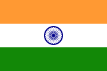

Lal Bahadur Shastri
Lal Bahadur Shashtri
Lal Bahadur Shastri (pronounced [lɑːl bəˈhɑːd̪ʊɾ ˈʃɑːst̪ɾi] (listen); 2 October 1904 – 11 January 1966) was an Indian politician and statesman who served as the 2nd Prime Minister of India from 1964 to 1966 and 6th Home Minister of India from 1961 to 1963. He promoted the White Revolution – a national campaign to increase the production and supply of milk – by supporting the Amul milk co-operative of Anand, Gujarat and creating the National Dairy Development Board. Underlining the need to boost India's food production, Shastri also promoted the Green Revolution in India in 1965. This led to an increase in food grain production, especially in the states of Punjab, Haryana and Uttar Pradesh.
Shastri was born to Sharada Prasad Srivastava and Ramdulari Devi in Mughalsarai on 2 October 1904. He studied in East Central Railway Inter college and Harish Chandra High School, which he left to join the non-cooperation movement. He worked for the betterment of the Harijans at Muzaffarpur and dropped his caste-derived surname of "Srivastava". Shastri's thoughts were influenced by reading about Swami Vivekananda, Gandhi and Annie Besant. Deeply impressed and influenced by Gandhi, he joined the Indian independence movement in the 1920s. He served as the president of Servants of the People Society (Lok Sevak Mandal), founded by Lala Lajpat Rai and held prominent positions in Indian National Congress. Following independence in 1947, he joined the Indian government and became one of Prime Minister Nehru's key cabinet colleagues, first as Railways Minister (1951–56), and then in numerous other prominent positions, including the Home Minister.
He led the country during the Indo-Pakistan War of 1965. His slogan "Jai Jawan, Jai Kisan" ("Hail to the soldier; Hail to the farmer") became very popular during the war. The war formally ended with the Tashkent Agreement on 10 January 1966; he died the following day, still in Tashkent, with the cause of his death in dispute; it was reported to be a cardiac arrest, but his family was not satisfied with the proffered reason. He was posthumously awarded the Bharat Ratna.
Early years (1904–1920)
Shastri was born on 2 October 1904 at the home of his maternal grandparents in a Kayastha family.[1] Shastri's paternal ancestors had been in the service of the zamindar of Ramnagar, Varanasi and Shastri lived there for the first year of his life. Shastri's father, Sharada Prasad Srivastava, was a school teacher who later became a clerk in the revenue office at Allahabad, while his mother, Ramdulari Devi, was the daughter of Munshi Hazari Lal, the headmaster and English teacher at a railway school in Mughalsarai. Shastri was the second child and eldest son of his parents; he had an elder sister, Kailashi Devi (b. 1900).[2][3] In April 1906, when Shastri was hardly 18 months old, his father, who had only recently been promoted to the post of deputy tahsildar, died in an epidemic of bubonic plague. Ramdulari Devi, then only 23 and pregnant with her third child, took her two children and moved from Ramnagar to her father's house in Mughalsarai and settled there for good. She gave birth to a daughter, Sundari Devi, in July 1906.[4][5] Thus, Shastri and his sisters grew up in the household of his maternal grandfather, Hazari Lalji.[6] However, Hazari Lalji himself died from a stroke in mid-1908, after which the family was looked after by his brother (Shastri's great-uncle) Darbari Lal, who was the head clerk in the opium regulation department at Ghazipur, and later by his son (Ramdulari Devi's cousin) Bindeshwari Prasad, a school teacher in Mughalsarai.[7] In Shastri's family, as with many Kayastha families of the era,[8] it was customary for children to receive an education in the Urdu language and culture. This is because Urdu/Persian had been the language of government for centuries, before being replaced by English, and old traditions persisted into the 20th century.[9] Therefore, Shastri began his education at the age of four under the tutelage of a maulvi (a Muslim cleric), Budhan Mian, at the East Central Railway Inter college in Mughalsarai. He studied there until the sixth standard.[10] In 1917, Bindeshwari Prasad was transferred to Varanasi, and the entire family moved there, including Ramdulari Devi and her three children. In Varanasi, Shastri joining the seventh standard at Harish Chandra High School.[11] At this time, he decided to drop his caste-derived surname of "Srivastava" (which is a traditional surname for a sub-caste of Kayastha families).[12]
Gandhi's disciple (1921–1945)
While his family had no links to the independence movement then taking shape, among his teachers at Harish Chandra High School was an intensely patriotic and highly respected teacher named Nishkameshwar Prasad Mishra, who gave Shastri much-needed financial support by allowing him to tutor his children. Inspired by Mishra's patriotism, Shastri took a deep interest in the freedom struggle, and began to study its history and the works of several of its noted personalities, including those of Swami Vivekananda, Mahatma Gandhi and Annie Besant.[13] In January 1921, when Shastri was in the 10th standard and three months from sitting the final examinations, he attended a public meeting in Benares hosted by Gandhi and Pandit Madan Mohan Malaviya. Inspired by the Mahatma's call for students to withdraw from government schools and join the non-cooperation movement, Shastri withdrew from Harish Chandra High School the next day and joined the local branch of the Congress Party as a volunteer, actively participating in picketing and anti-government demonstrations.[14] He was soon arrested and jailed, but was then let off as he was still a minor.[15][16]
Shastri's immediate supervisor was a former Benares Hindu University lecturer named J.B. Kripalani, who would become one of the most prominent leaders of the Indian independence movement and one among Gandhi's closest followers.[17] Recognising the need for the younger volunteers to continue their educations, Kripalani and a friend, V.N. Sharma, had founded an informal school centered around "nationalist education" to educate the young activists in their nation's heritage and with the support of a wealthy philanthropist and ardent Congress nationalist, Shiv Prasad Gupta, the Kashi Vidyapith was inaugurated by Gandhi in Benares as a national institution of higher education on 10 February 1921. Among the first students of the new institution, Shastri graduated with a first-class degree in philosophy and ethics from the Vidyapith in 1925. He was given the title Shastri ("scholar").[18] The title was a bachelor's degree awarded by the institution but it stuck as part of his name.[19][20]
Shastri enrolled himself as a life member of the Servants of the People Society (Lok Sevak Mandal), founded by Lala Lajpat Rai, and began to work for the betterment of the Harijans under Gandhi's direction at Muzaffarpur.[21] Later he became the President of the Society.[22][23]
Independence Activism of Lal Bahadur Shastri
In 1928 Shastri became an active and mature member of the Indian National Congress at the call of Mahatma Gandhi. He was imprisoned for two and a half years.[24] Later, he worked as the Organizing Secretary of the Parliamentary Board of U.P. in 1937.[25] In 1940, he was sent to prison for one year, for offering individual Satyagraha support to the independence movement.[26]
On 8 August 1942, Mahatma Gandhi issued the Quit India speech at Gowalia Tank in Bombay, demanding that the British leave India. Shastri, who had just then come out after a year in prison, travelled to Allahabad. For a week, he sent instructions to the independence activists from Jawaharlal Nehru's home, Anand Bhavan.[27] He served as an elected representative for United Provinces in 1937 and 1946.[28]
Political Career (1947–1964)
State minister
Following India's independence, Shastri was appointed Parliamentary Secretary in his home state, Uttar Pradesh.[29] He became the Minister of Police and Transport under Govind Ballabh Pant's Chief Ministership on 15 August 1947 following Rafi Ahmed Kidwai's departure to become a minister at the centre. As the Transport Minister, he was the first to appoint women conductors. As the minister in charge of the Police Department, he ordered that police use water jets, whose instructions was given by him, instead of lathis to disperse unruly crowds.[30] His tenure as police minister (As Home Minister was called prior to 1950) saw successful curbing of communal riots in 1947, mass migration and resettlement of refugees.[31]
Cabinet ministerIn 1951, Shastri was made the General Secretary of the All-India Congress Committee with Jawaharlal Nehru as the prime minister. He was directly responsible for the selection of candidates and the direction of publicity and electioneering activities. He played an important role in the landslide successes of the Congress Party in the Indian General Elections of 1952, 1957 and 1962. In 1952, he successfully contested UP Vidhansabha from Soraon North cum Phulpur West seat and won by getting over 69% of vote. He was believed to be retained as home minister of UP, but in a surprise move was called to Centre as minister by Nehru. Shastri was made Minister of Railways and Transport in First Cabinet of Republic of India on 13 May 1952.[32] He served as the Minister of Commerce and Industry in 1959 and Minister of Home Affairs in 1961.[33] Shastri laid the foundation of Mangalore Port in 1964 as a minister without a portfolio.[34]
Lal Bahadur Shashtri
Prime Minister Of India

Flag Of India
In office 9 june 1964-11 January 1966
President
Sarvepalli Radhakrishnan
Vice President
Zakir Husan
proceeded by
Gulzarilal nanda
Succeeded by
Gulzarilal nanda
Minister of External Affairs
In Office
9 june 1964- 18 july 1964
Prime Minister
Himself
Preceded by
Gulzarilal nanda
Succeeded by
Sardar Swaran Singh
No restriction on renewal
Minister of Home Affairs
In Office
4 April 1961 - 29 August 1963
Jawaharlal Nehru
Preceded by
Govind Ballabh Pant
Succeeded by
Gulzarilal nanda
Minister of Railways
In Office
13 May 1952 - 7 December 1956
Prime Minister
Jawaharlal Nehru
Preceded by
N. Gopalaswami Ayyangar
Succeeded by
Jagjivan Ram
Personal details
Born
Lal Bahadur Srivastava
2 October 1904
Died
11 January 1966 ( aged 61) TASKENT , Uzbek SSR, Soviet Union
Monuments
Vijay Ghat
political party
Indian National Congress
Spouse
Lalita Shastri
Children
6
ALma mater
Gandhi Kashi Vidyapeeth
Profession
politician
Awards
Bharat Ratna (1966 )
Nickname(s)
Man of Peace Nanhe
Succeeded by
Jagjivan Ram
Succeeded by
Jagjivan Ram
Succeeded by
Jagjivan Ram
Succeeded by
Jagjivan Ram
Succeeded by
Jagjivan Ram
Succeeded by
Jagjivan Ram
Succeeded by
Jagjivan Ram
Succeeded by
Jagjivan Ram
Prime minister (1964–1966)
Jawaharlal Nehru died in office on 27 May 1964. Then Congress Party president K. Kamaraj was instrumental in making Shastri prime minister on 9 June. Shastri, though mild-mannered and soft-spoken, was a Nehruvian socialist and thus held appeal to those wishing to prevent the ascent of conservative right-winger Morarji Desai. In his first broadcast as prime minister, on 11 June 1964, Shastri stated:[35]
There comes a time in the life of every nation when it stands at the cross-roads of history and must choose which way to go. But for us, there need be no difficulty or hesitation, no looking to right or left. Our way is straight and clear—the building up of a socialist democracy at home with freedom and prosperity for all, and the maintenance of world peace and friendship with all nations. Domestic policies
Shastri retained many members of Nehru's Council of Ministers. T. T. Krishnamachari was retained as the Finance Minister of India, as was Defence Minister Yashwantrao Chavan. He appointed Swaran Singh to succeed him as External Affairs Minister. He also appointed Indira Gandhi, daughter of Jawaharlal Nehru and former Congress President, as the Minister of Information and Broadcasting. Gulzarilal Nanda continued as the Minister of Home Affairs.[36]
Lal Bahadur Shastri's tenure witnessed the Madras anti-Hindi agitation of 1965. The government of India had for a long time made an effort to establish Hindi as the sole national language of India. This was resisted by the non-Hindi speaking states particularly Madras State.[37] To calm the situation, Shastri gave assurances that English would continue to be used as the official language as long the non-Hindi speaking states wanted. The riots subsided after Shastri's assurance, as did the student agitation.[38]
Economic policies
Shastri continued Nehru's socialist economic policies with central planning.[39] He promoted the White Revolution – a national campaign to increase the production and supply of milk – by supporting the Amul milk co-operative of Anand, Gujarat and creating the National Dairy Development Board.[40] He visited Anand on 31 October 1964 for inauguration of the Cattle Feed Factory of Amul at Kanjari. As he was keenly interested in knowing the success of this co-operative, he stayed overnight with farmers in a village, and even had dinner with a farmer's family. He discussed his wish with Verghese Kurien, then the General Manager of Kaira District Co-operative Milk Producers' Union Ltd (Amul) to replicate this model to other parts of the country for improving the socio-economic conditions of farmers. As a result of this visit, the National Dairy Development Board (NDDB) was established at Anand in 1965.[41]
While speaking on the chronic food shortages across the country, Shastri urged people to voluntarily give up one meal so that the food saved could be distributed to the affected populace. However, he ensured that he first implemented the system in his own family before appealing to the country. He went on air to appeal to his countrymen to skip a meal a week. The response to his appeal was overwhelming. Even restaurants and eateries downed the shutters on Monday evenings. Many parts of the country observed the "Shastri Vrat". He motivated the country to maximize the cultivation of food grains by ploughing the lawn himself, at his official residence in New Delhi. During the 22-day war with Pakistan in 1965, On 19 October 1965, Shastri gave the seminal 'Jai Jawan Jai Kishan' ("Hail the soldier, Hail the farmer") slogan at Urwa in Allahabad that became a national slogan. Underlining the need to boost India's food production, Shastri also promoted the Green Revolution in India in 1965.[42][43][44] This led to an increase in food grain production, especially in Punjab, Haryana, and Uttar Pradesh. Major milestones in this undertaking were the development of high-yielding varieties of wheat,[45] and rust resistant strains of wheat.[46][47]
Though he was a socialist, Shastri stated that India cannot have a regimented type of economy. His government passed the National Agricultural Products Board Act and was responsible for setting up the Food Corporation of India under the Food Corporation's Act 1964.[48]
Jai Jawan Jai Kisan
For the outstanding slogan given by him during Indo-Pak war of 1965 Ministry of Information and Broadcasting (India) commemorated Shastri even after 47 years of his death on his 48th martyr's day:[49]
Former Prime Minister Lal Bahadur Shastri was one of those great Indians who has left an indelible impression on our collective life. Lal Bahadur Shastri's contribution to our public life were unique in that they were made in the closest proximity to the life of the common man in India. Lal Bahadur Shastri was looked upon by Indians as one of their own, one who shared their ideals, hopes and aspirations. His achievements were looked upon not as the isolated achievements of an individual but of our society collectively. Under Shastri's leadership India faced and repulsed the Pakistani invasion of 1965. It is not only a matter of pride for the Indian Army but also for every citizen of the country. His slogan Jai Jawan! Jai Kisan!! reverberates even today through the length and breadth of the country. Underlying this is the inner-most sentiments 'Jai Hind'. The war of 1965 was fought and won for our self-respect and our national prestige. For using our Defence Forces with such admirable skill, the nation remains beholden to Shri Lal Bahadur Shastri. He will be remembered for all times to come for his large heartedness and public service.[50]
Foreign policies
Shastri continued Nehru's policy of non-alignment but also built closer relations with the Soviet Union. In the aftermath of the Sino-Indian War of 1962 and the formation of military ties between China and Pakistan, Shastri's government decided to expand the country's defence budget.[51]
In 1964, Shastri signed an accorresponsibilities of local governments to provide adequate facilities to shelter the repatriates upon disembarkation on Indian soil. Particularly in the Madras State the Chief Minister during that time, Minjur K. Bhaktavatsalam, showed care in rehabilitation of the returnees. In December 1965, Shastri made an official visit with his family to Rangoon, Burma and re-established cordial relations with the country's military government of General Ne Win.[52]
War with Pakistan
Shastri's greatest moment came when he led India in the 1965 Indo-Pak War.[1] Laying claim to half the Kutch peninsula, the Pakistani army skirmished with Indian forces in August 1965. In his report to the Lok Sabha on the confrontation in Kutch, Shastri stated:[35]
In the utilization of our limited resources, we have always given primacy to plans and projects for economic development. It would, therefore, be obvious for anyone who is prepared to look at things objectively that India can have no possible interest in provoking border incidents or in building up an atmosphere of strife... In these circumstances, the duty of Government is quite clear and this duty will be discharged fully and effectively... We would prefer to live in poverty for as long as necessary but we shall not allow our freedom to be subverted.
On 1 August 1965, major incursions of militants and Pakistani soldiers began, hoping not only to break down the government but incite a sympathetic revolt. The revolt did not happen, and India sent its forces across the Ceasefire Line (now Line of Control) and threatened Pakistan by crossing the International Border near Lahore as war broke out on a general scale. Massive tank battles occurred in the Punjab, and while the Pakistani forces made gains in the northern part of subcontinent, Indian forces captured the key post at Haji Pir, in Kashmir, and brought the Pakistani city of Lahore under artillery and mortar fire.
The Indo-Pak war ended on 23 September 1965 with a United Nations-mandated ceasefire. In a broadcast to the nation on the day of the ceasefire, Shastri stated:[35]
While the conflict between the armed forces of the two countries has come to an end, the more important thing for the United Nations and all those who stand for peace is to bring to an end the deeper conflict.... How can this be brought about? In our view, the only answer lies in peaceful coexistence. India has stood for the principle of coexistence and championed it all over the world. Peaceful coexistence is possible among nations no matter how deep the differences between them, how far apart they are in their political and economic systems, no matter how intense the issues that divide them.
During his tenure as prime minister, Shastri visited many countries including the Soviet Union, Yugoslavia, England, Canada, Nepal, Egypt and Burma.[21] In October 1964 while returning from the Non Alliance Conference in Cairo, on the invitation of the-then president of Pakistan, Mohammed Ayub Khan, to have lunch with him, Shastri made a stopover at Karachi Airport for a few hours. Breaking with protocol, Ayub Khan personally received him at the airport and they had an informal meeting. After the ceasefire with Pakistan in 1965, Shastri and Ayub Khan attended a summit in Tashkent (former USSR, now in modern Uzbekistan), organized by Alexei Kosygin. On 10 January 1966, Shastri and Ayub Khan signed the Tashkent Declaration.[1]
Appointment powers
The president appoints as prime minister, the person most likely to command the support of the majority in the Lok Sabha (usually the leader of the majority party or coalition). The president then appoints the other members of the Council of Ministers, distributing portfolios to them on the advice of the prime minister.[19]: 72 The Council of Ministers remains in power at the 'pleasure' of the president. The president appoints 12 members of the Rajya Sabha from amongst persons who have special knowledge or practical experience in respect of such matters as literature, science, art and social service. The president may nominate not more than two members of Anglo Indian community as Lok Sabha members per Article 331, which was removed in 2019. Governors of states are also appointed by the president who shall work at the pleasure of the president. Per Article 156, the president is empowered to dismiss a governor who has violated the constitution in their acts. The president is responsible for making a wide variety of appointments. These include:[19]: 72 The Chief Justice of India and other judges of the Supreme Court of India and state/union territory high courts. The Chief Minister of the National Capital Territory of Delhi (Article 239 AA 5 of the constitution). The Comptroller and Auditor General Of India. The Chief Election Commissioner and other Election Commissioners. The Chairman and other members of the Union Public Service Commission. The Attorney General Of India. Ambassadors and High Commissioners to other countries (only through the list of names given by the prime minister).[20][21]: 48 Officers of the All India Services (IAS, IPS and IFoS), and other Central Civil Services in Group 'A'.